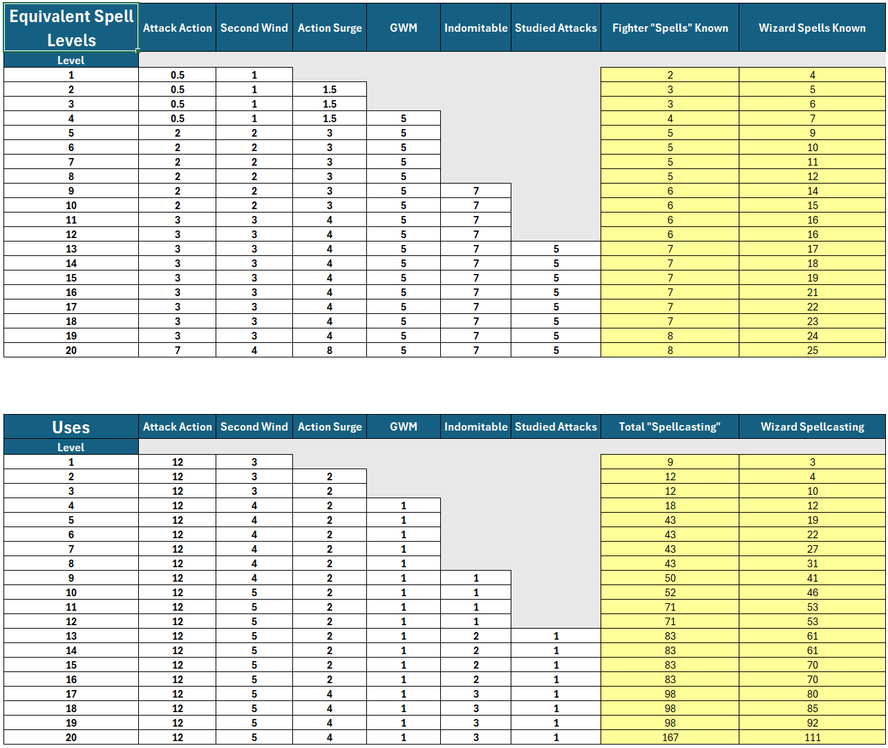
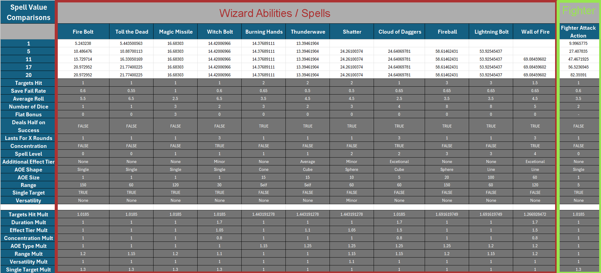

A preview of my mathematical model. This page condenses the findings of 7 other pages into a conclusion.
Dungeons and Dragons Mathematical Model
In this project, I attempted to prove that in Dungeons and Dragons 5.5e, the Wizard class has significantly more, and more powerful, resources than the Fighter class does.
In my attempt to prove that theory, I built out a large spreadsheet that basically uses traits like damage, area of effect, uses per day, and several other factors to put a numerical value on the Wizard class' spells. I them used similar methodology to rank Fighter abilities, and compared the two classes based on the value of their abilities and the frequency by which they can use said abilities.
In the end, I actually didn't prove my theory, and the numbers for the Wizard vs. the Fighter favored the fighter at every character level.
Want to poke around in the spreadsheet? It's here on my Itch.ioChallenge: Apples to Apples Comparisons
Games feature a lot of asymmetrical abilities, especially games like Dungeons and Dragons with its many distinct classes. So the goal when building out a spreadsheet that's trying to compare the relative value of two different abilities from two different classes needs to be: How do we avoid apples to oranges comparisons? How do we draw actually useful comparisons between these wildly different abilities?
I used two main strategies to try to accomplish that goal: modeling every Fighter ability as a spell,translating the mechanics of their abilities into spell mechanics; and mostly focusing on the Wizard spells that deal damage.
For strategy 1, a lot of the fighter ability mechanics are actually pretty easy to translate. Most of them deal damage; a lot of spells already do that. Fighter attacks do have areas of effect, just like spells often do; they're just very small, single-enemy areas of effect. And where Wizards have Spell Slots that they expend to cast their spells and that are restored after a longe rest, Fighters also have "Slots" that they use to "cast" their own abilities.

By modeling fighter abilities as spells, I was able to do things like this, where I rank spells by assigning each of their properties a multiplier, and then rank Fighter abilities the exact same way.
For strategy 2, I decided to focus mostly on the Wizard spells that dealt damage. Most Fighter abilities deal damage, so it just made for easier comparisons. If I were to revise this project or redo it, I think this is the area that I would change most. Arguably, damage dealing spells are the weakest spells in a Wizard's arsenal, so to give them a more fair chance at beating the Fighter, I probably should have tried to analyze the Wizard's many other powerful options.
Click here
Usage of AI Tools (ChatGPT, Google AI Overview)
What I didn't use them for
- Drawing any conclusions from the data
- Informing my spell-ranking strategy (i.e. it had no say in which spell properties I looked at or what their multipliers should be.)
What I did use them for
- Finding the correct Excel function based on what I needed in the moment